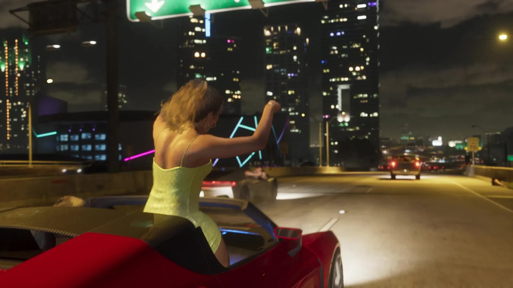
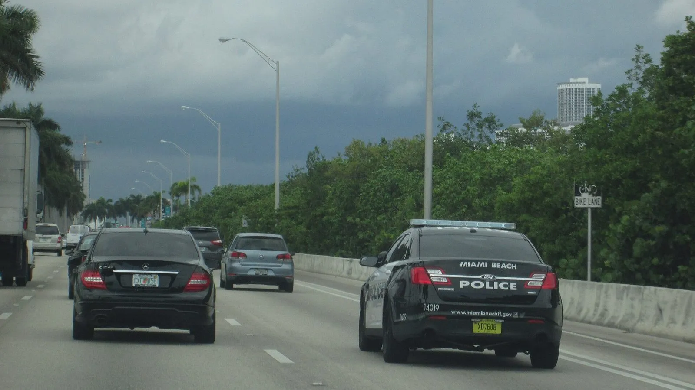

Танец на машине из трейлера GTA 6 и вирусное видео с дамбы MacArthur Causeway
Опубликовано:
Сцена узнаётся: танец прямо на ходу, на трассе среди небоскрёбов Майами. Но кадр Rockstar переделала: в игре ночь, а не закат, и девушка танцует, стоя в открытой машине, а не на крыше. Сама Rockstar прототип не называла — это версия фанатов и СМИ.


- В первом трейлере GTA 6 девушка в светло-зелёном платье танцует, подняв руки, — она высунулась из красной машины, которая едет по ночной эстакаде Вайс-Сити.
- Фанаты и СМИ связали кадр с вирусным видео из Майами: 13 марта 2017 года девушка танцевала на крыше машины, ехавшей по дамбе MacArthur Causeway.
- Реальное видео сняли около шести вечера, на закате; одна её нога была в люке машины.
- Во Флориде ехать снаружи машины запрещено законом штата, исключение — профессиональные выступления.
- Rockstar прототип не подтверждала.
Что в игре
Первый трейлер GTA 6 (декабрь 2023) показывает ночную жизнь Вайс-Сити короткими кадрами. В одном из них красная машина едет по эстакаде под зелёными указателями, вокруг — подсвеченные небоскрёбы. Девушка в светло-зелёном платье высунулась из машины по пояс, подняла руки и танцует прямо на ходу.
Это не миссия и не геймплей, а сценка из жизни города — Rockstar собрала в трейлере десяток таких моментов в стиле роликов из соцсетей.
Что в реальности
В марте 2017 года по соцсетям разошлось видео из Майами: девушка танцует на крыше машины, которая едет по дамбе MacArthur Causeway. По данным Miami New Times, видео сняли в понедельник, 13 марта 2017 года, около шести вечера, на закате. Девушка на секунду отпускала руки, а одна её нога была в люке машины. Снимал знакомый знакомых, а в Twitter ролик выложил местный кинорежиссёр.
Издание спросило дорожный патруль Флориды — там ответили, что записей о таком случае у них нет. При этом закон штата запрещает ехать снаружи машины (раздел 316.2015), исключение сделано только для артистов на профессиональном выступлении.
Сама дамба — одна из главных дорог Майами. Её открыли в 1920 году под названием County Causeway, а в 1942-м переименовали в честь генерала Дугласа Макартура. Она тянется на 5,6 км через залив Бискейн от центра Майами к Саут-Бич, мимо островов Уотсон, Палм, Хибискус и Стар.
Видео с дамбы было не единственным: Miami New Times связывал его с роликом, снятым днём раньше, где девушка танцевала на полицейском квадроцикле в Майами-Бич. Такие ролики в Майами снимали не раз — поэтому кадр в трейлере и узнали сразу.
Совпадает и отличается
| Реальность | GTA 6 | |
|---|---|---|
| Танец на машине прямо на ходу | Да, 13 марта 2017 | 🟢 Да |
| Трасса-дамба среди небоскрёбов Майами | MacArthur Causeway | 🟡 Эстакада Вайс-Сити |
| Время суток | Закат, около 18:00 | 🔵 Ночь |
| Где танцует | На крыше, нога в люке | 🔵 Стоит в открытой машине |
Источники: Rockstar Games — первый трейлер GTA 6 (декабрь 2023); Miami New Times — «Video: Woman Twerks on Roof of Car Speeding Down MacArthur Causeway» (март 2017); Флорида, закон 316.2015; Википедия — MacArthur Causeway; Wikimedia Commons — фото Ivan Curra (CC BY-SA 3.0) и Averette (CC BY 3.0).
Реальные фото: Фото: Averette, CC BY 3.0 · Wikimedia Commons; Фото: Ivan Curra, CC BY-SA 3.0 · Wikimedia Commons. Кадры игры: Rockstar Games.
Каждый день — одно сравнение: кадр игры рядом с реальным фото. Подписывайтесь:
YouTubeInstagramTikTok vs
vs
 vs
vs